- Provided statistical and deep learning expertise to inform clients' decision on energy consumption.
- Improved performance by 25% using advanced models (DNN, LSTM, Transformer).
- Used Claude command line tool to vide code and expedite product development.
01About Me
My name is James Guo 过仲懿. I was made in Wuxi 🇨🇳 and adopted by California 🇺🇸.
I am a data scientist with 5+ years of experience leading end-to-end projects, including data cleaning, exploratory data analysis, statistical analyses and machine learning modeling, and data visualization. I provide evidence-based recommendations through written reports and presentations for both technical and non-technical audiences.
Outside of work, I love body building, swimming, and MORE on my Instagram!
Let's keep in touch!
5+
Years Exp
MS
Stanford
BS
Cornell
👨🏻💻 Data Science
📊 Statistical Modeling
🤖 Machine Learning
📈 Data Visualization
📝 Scientific Writing
🖥️ High Performance Computing
02Education
Stanford University
MS in Epidemiology and Clinical Research
Cornell University
BS in Statistics and Biology
Case Western Reserve
Biochemistry
03Experience
Work
-
Data Scientist IW74 03/2026 – Present
-
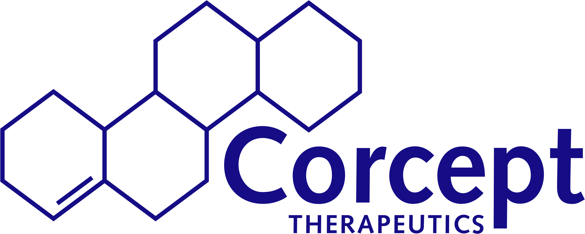
Biostatistics Intern UpcomingCorcept Therapeutics (est.) 06/2026 – 08/2026 -
Election Aide Official UpcomingSanta Clara County (est.) 04/2026 – 06/2026
-
Researcherthe Gladstone Institutes 07/2025 – 04/2026
-
Student Life AssistantStanford Online High School 02/2024 – 01/2025
-
 Graduate Student ResearcherStanford University & UCSF 10/2023 – 06/2025
Graduate Student ResearcherStanford University & UCSF 10/2023 – 06/2025 -
iOS Development InternMatch Group 07/2022 – 08/2022
-
 Undergraduate Teaching AssistantCornell University 01/2021 – 05/2023
Undergraduate Teaching AssistantCornell University 01/2021 – 05/2023 -
Student Food AssistantCornell Dining 02/2022 – 05/2022
- To be updated...
- Assisted with the 2026 California Primary Election voting.
- Received training to deliver high-quality customer service to voters by providing guidance on forms and required materials, ensuring an efficient and well-organized voting process.
- To be udpated...
- Pioneered the development of an R package (
permuteDE) with a permutation testing-based pipeline to reduce false positives in differential gene expression analysis in Alzheimer's disease. - Collected and integrated 10 massive-scale public scRNA-seq datasets from Synapse to demonstrate the package's usability.
- Applied AlphaGenome to study how the MAPT gene variants might alter splicing patterns.
- Removed doublets, performed dimensionality reduction and clustering of scATAC-seq data.
- Communicated complex statistical findings and effective data visualizations clearly to diverse audiences.
- Supported various event planning such as meeting agenda, student activities, arrival/departure bus schedules, etc.
- Designed engaging slides for weekly themed class meetings.
- Maintained student records in Google Sheets, using data entry and Excel functions with strong attention to details.

- Revised the “Enhanced Interests” feature in SwiftUI, allowing users to personalize their tags with text and emojis for richer self-expression.
- Improved code efficiency by migrating UIKit components to SwiftUI.
- Taught a variety of courses.
- Led discussions, graded homework and assignments, held office hours, and bridged communication between professors and students.
- Maintained course materials and student records in Canvas and Gradescope.
- Replenished food in the Morrison dining hall.
- Made pizzas and chow meins to feed hungry students.
- Learned about dietary guidelines and protocols.
Project Highlight
-
Project TBD
-
 Bitcoin Portfolio Allocation
Bitcoin Portfolio Allocation -

permuteDE -
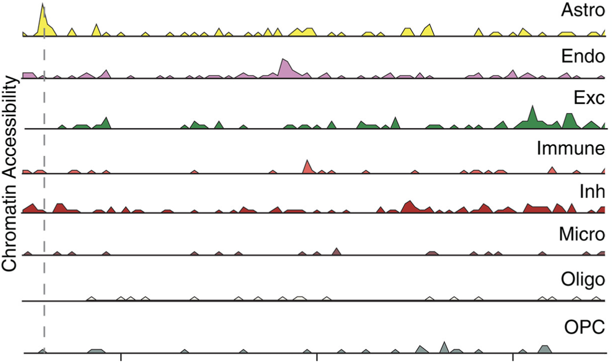
Deep Learning + Single-Cell Multi-Omics -
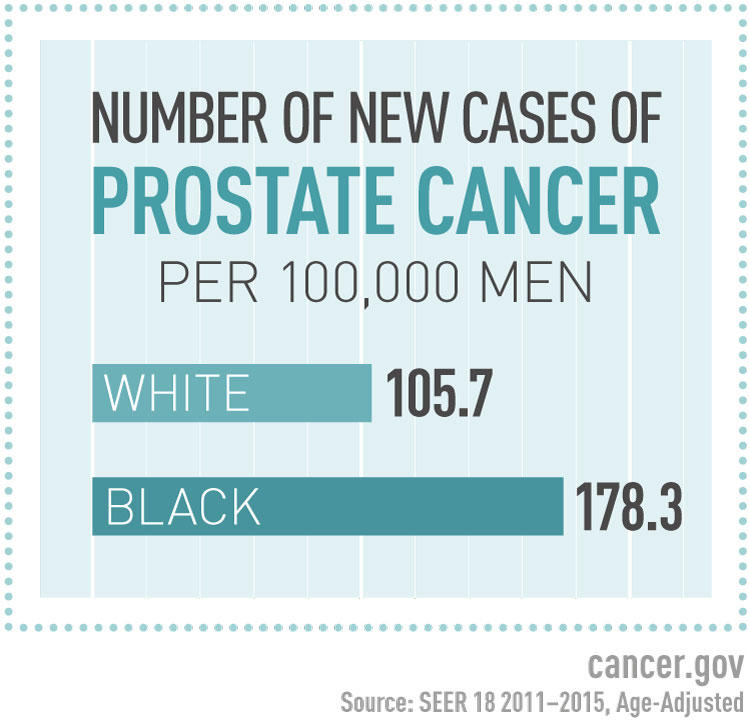
Black–White Metabolomic Disparities in Prostate Cancer -
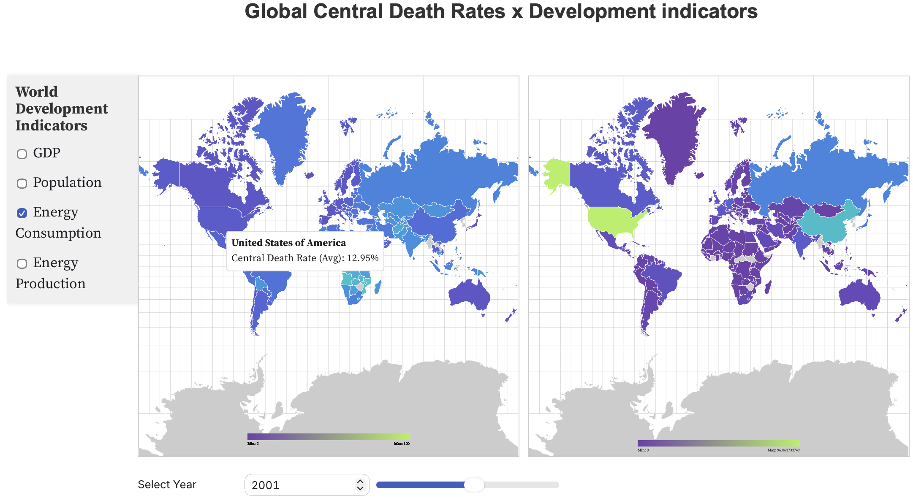
Global Disparities in Central Death Rates -
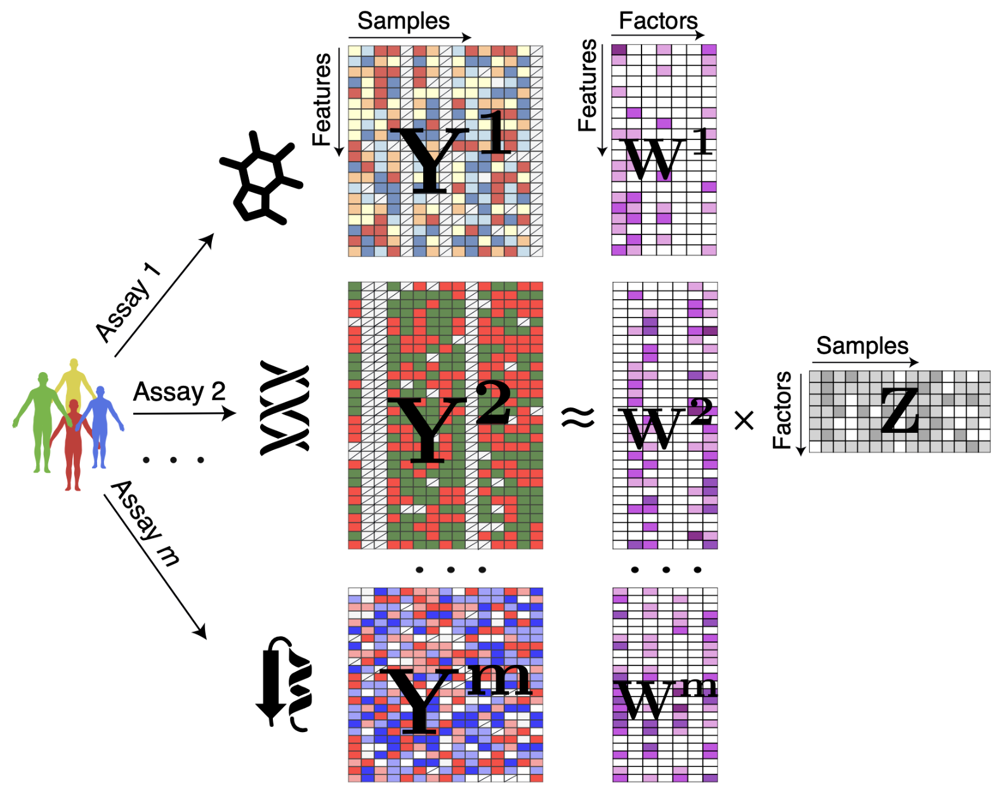
Multi-omics Alzheimer's Grant Proposal -
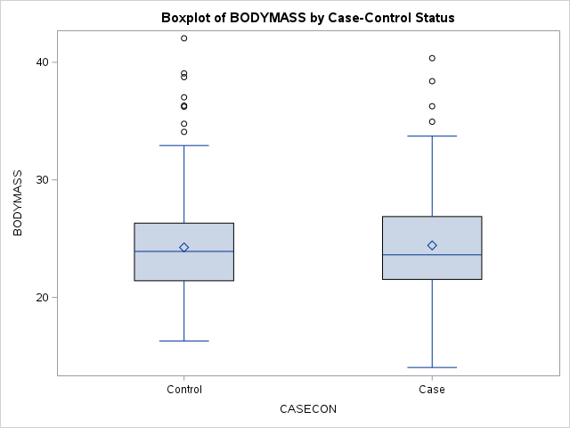
Subarachnoid Hemorrhage Risk Modeling -
BOOKED — iOS App
Project TBD
Biostatistics Intern · Corcept Therapeutics
(est.) 06/2026 – 08/2026
- To be udpated...
Bitcoin Portfolio Allocation
2026 HKU Future Leaders Quest – Dean’s Master Fellowship Summer Selection Camp
05/2026
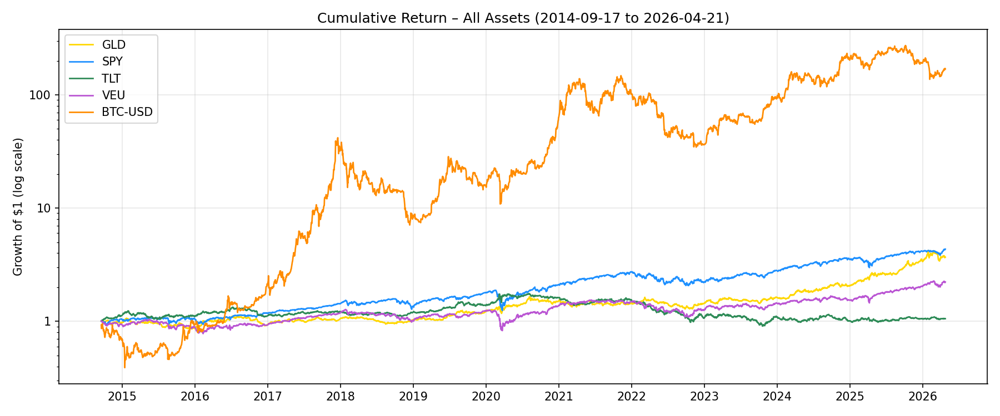
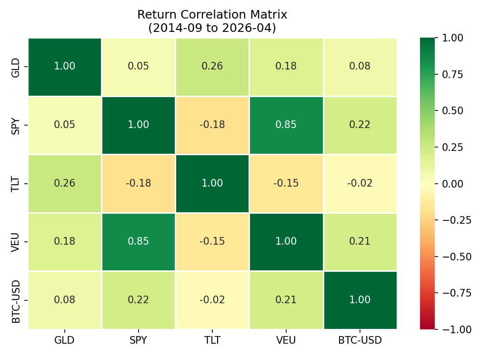
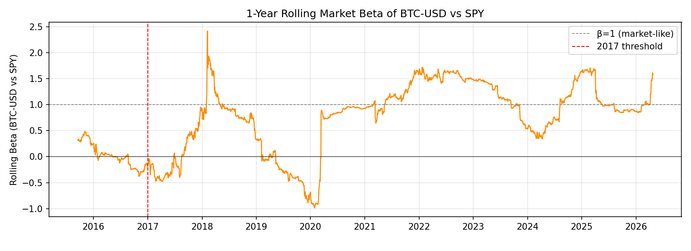
How much Bitcoin should a moderate-risk household hold alongside a traditional ETF portfolio? This project answers the question end-to-end: data collection, descriptive analysis, mean–variance optimization under multiple risk constraints, and a forward-looking Black–Litterman adjustment. Universe: SPY, VEU, TLT, GLD, and BTC-USD; risk-free rate from the 3-month T-Bill (^IRX); ~2,900 trading days from BTC's 2014 listing to present.
- Computed annualized return, volatility, Sharpe, skew, max drawdown, and the full correlation matrix; estimated CAPM beta of BTC vs SPY over full / pre-2017 / post-2017 sub-samples to show BTC's structural shift from idiosyncratic (β ≈ 0) to risk-asset-like (β ≈ 1).
- Solved five long-only mean–variance scenarios in
cvxpy(OSQP / SCS): max-Sharpe with and without BTC, volatility caps at 10% and 15% p.a., a 5% daily CVaR / Expected Shortfall constraint, and max-Sharpe with BTC capped at 10%. - Implemented He & Litterman (1999) Black–Litterman: derived the equilibrium prior from market-cap weights and blended in three explicit views (BTC outperforms VEU by 15% p.a.; SPY earns 10% p.a.; GLD outperforms TLT by 3% p.a.), then fed posterior expected returns into a max-Sharpe optimizer.
- Including BTC lifted the max-Sharpe portfolio from ~0.97 to ~1.25 (+29%); the unconstrained optimizer wanted ~15% BTC, while capping BTC at 10% cost only ~0.02 in Sharpe.
- Recommendation: allocate 5–10% to BTC, anchored on the “max-Sharpe with BTC ≤ 10%” portfolio and validated by Black–Litterman, with quarterly rebalancing.
permuteDE: Permutation Testing Pipeline for Differential Gene Expression Analysis
Researcher · the Corces Lab @ the Gladstone Institutes
07/2025 – 04/2026
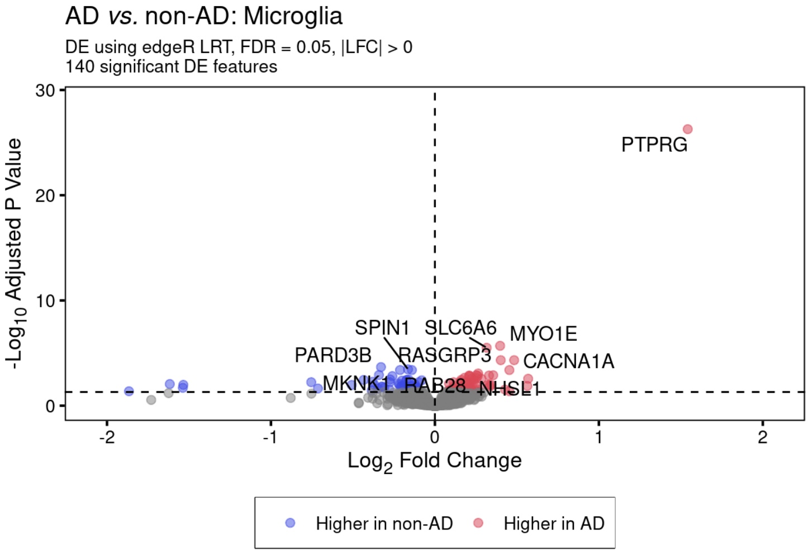
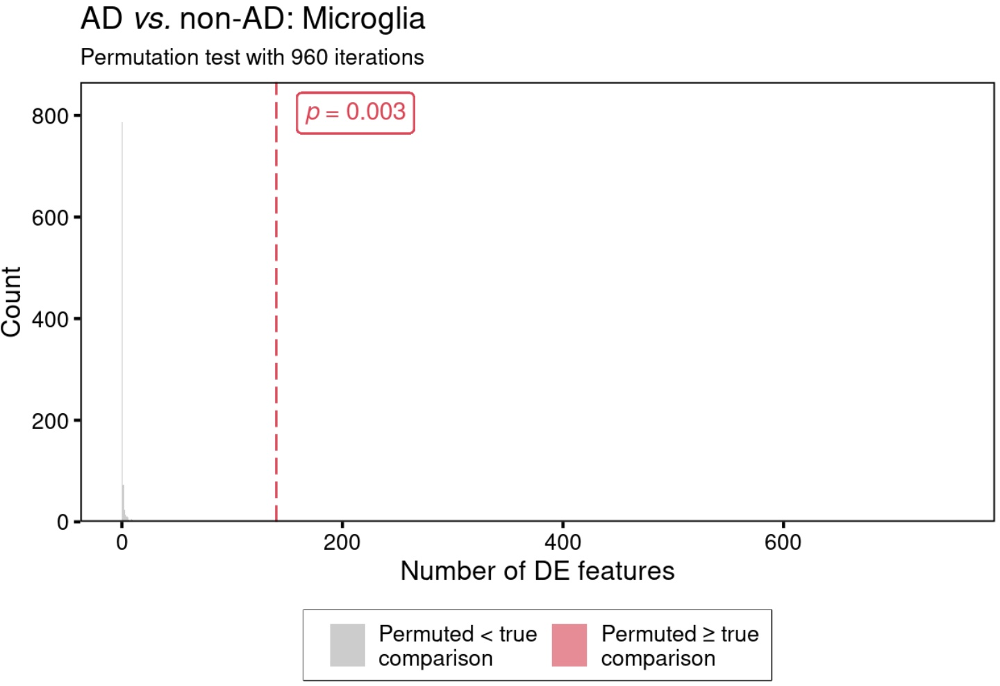
Differential expression analyses are susceptible to false positives. permuteDE uses permutation testing to identify which comparisons have a higher number of significant differentially expressed features than would be expected by chance.
- Developed the
permuteDER package, overseeing maintenance, debugging, and feature development. - Collected and integrated eight large-scale public snRNA-seq datasets from Synapse, performing rigorous data cleaning, metadata curation, and structuring data into
Seuratobjects andBPCellsmatrices. - Applied the
permuteDEpipeline across eight datasets to demonstrate its real-world utility.
Note: Currently we are finalizing the package and analyses; permuteDE will be released upon manuscript publication.
Deep Learning + Single-Cell Multi-Omics to Study Schizophrenia & Bipolar Disorder
Graduate Student Researcher · the Kundaje Lab @ Stanford University
04/2024 – 06/2025
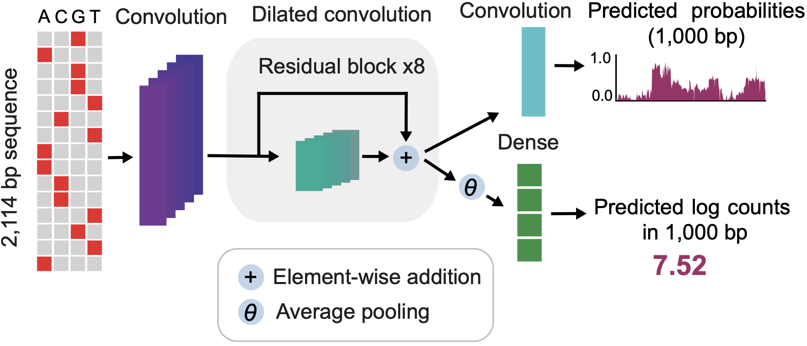
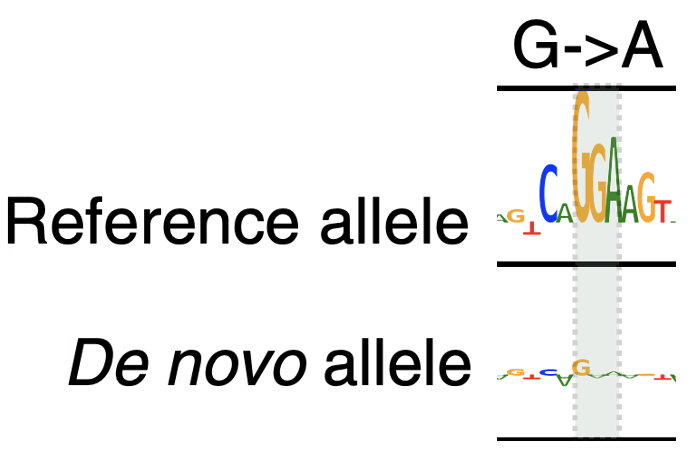
Figure Source: Emani et al., Science 2024 · Pampari et al., bioRxiv preprint 2025 · Ameen et al., Cell 2022
I joined the PsychENCODE project at Prof. Anshul Kundaje's lab. I led this project analyzing scRNA-seq and scATAC-seq multiome data from three brain regions to investigate cell type-specific chromatin accessibility and gene expression patterns underlying schizophrenia and bipolar disorder to better understand their pathogeneses.
- Preprocessed high-dimensional multiome data through quality control, dimensionality reduction, clustering, doublet detection, marker identification, and cell type annotation.
- Performed differential gene expression & peak accessibility analyses (pseudobulk: Wald test; single-cell: Wilcoxon + MAST) across multiple cell types.
- Trained cell type-specific
ChromBPNetmodels to identify causal genomic variants and their downstream effects on chromatin accessibility and gene regulation.
Black–White Metabolomic Disparities in Prostate Cancer
Graduate Student Researcher · the Graff Lab @ UCSF
10/2023 – 06/2025
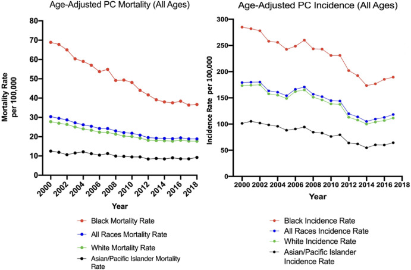
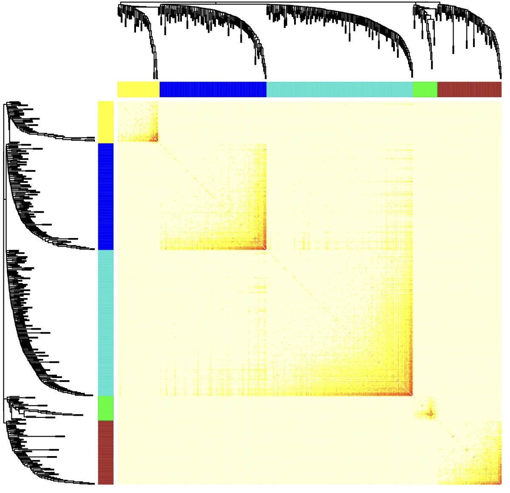
Figure Source: National Cancer Institute 2019 · Lowder et al., Cancer Letters 2022 · Langfelder & Horvath, BMC Bioinformatics 2008
Black men face higher prostate cancer incidence and mortality than White men. This project leverages LC-MS metabolomics on a cohort of 34 men (17 Black, 17 White) from the IRONMAN Registry to characterize metabolites associated with such disparities. I presented this project as my Master's thesis.
- Applied t-test, PCA, PLS-DA, random forest, logistic & linear regression, chemical similarity enrichment analysis, pathway analysis, and WGCNA to LC-MS metabolomics data, characterizing metabolites associated with Black-White prostate cancer disparities.
- Interpreted complex statistical findings and communicated them through clear scientific writing and effective data visualizations; defended before Stanford Epidemiology faculty and students.
Interactive Data Visualization Dashboards: Global Disparities in Central Death Rates
Class Project · Stanford University
10/2024 – 12/2024
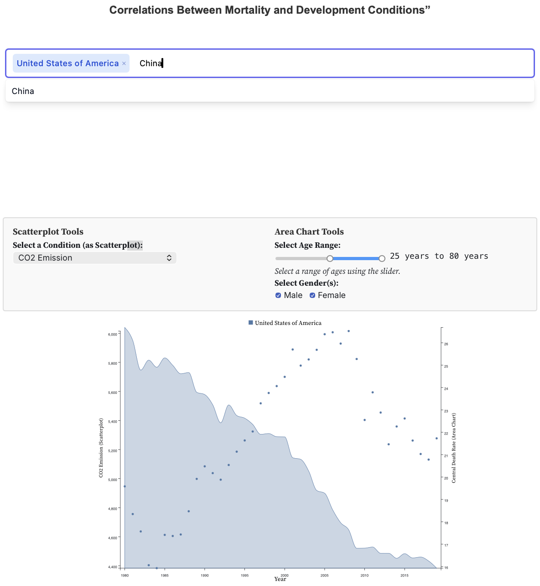
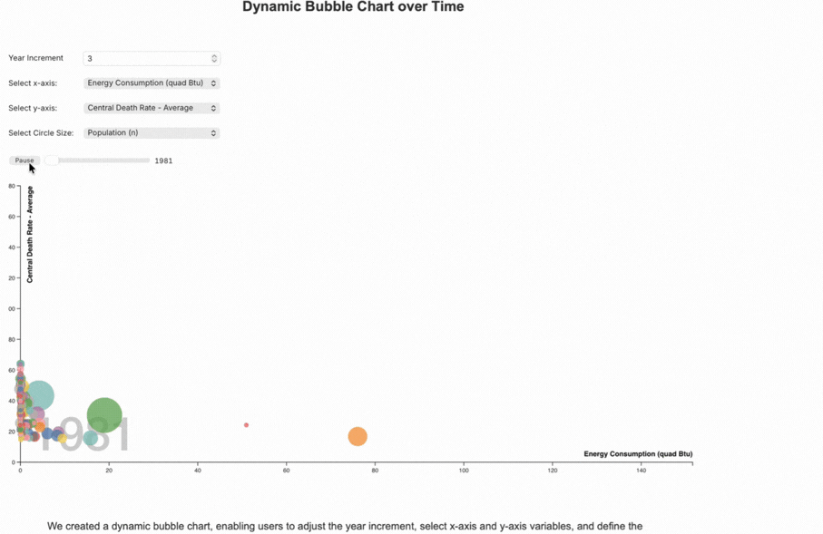
This project visualized the interplay between life expectancy (measured by central death rates) and economic development, healthcare access, energy production, and consumption patterns.
- Developed interactive data visualization dashboards (global heatmaps, cross-country correlation analyses, and time-evolving bubble charts) using JavaScript D3.
[Hypothetical] Integrating Single-Cell Multi-omics to Investigate Alzheimer's Disease
Class Project · Stanford University
03/2024 – 06/2024
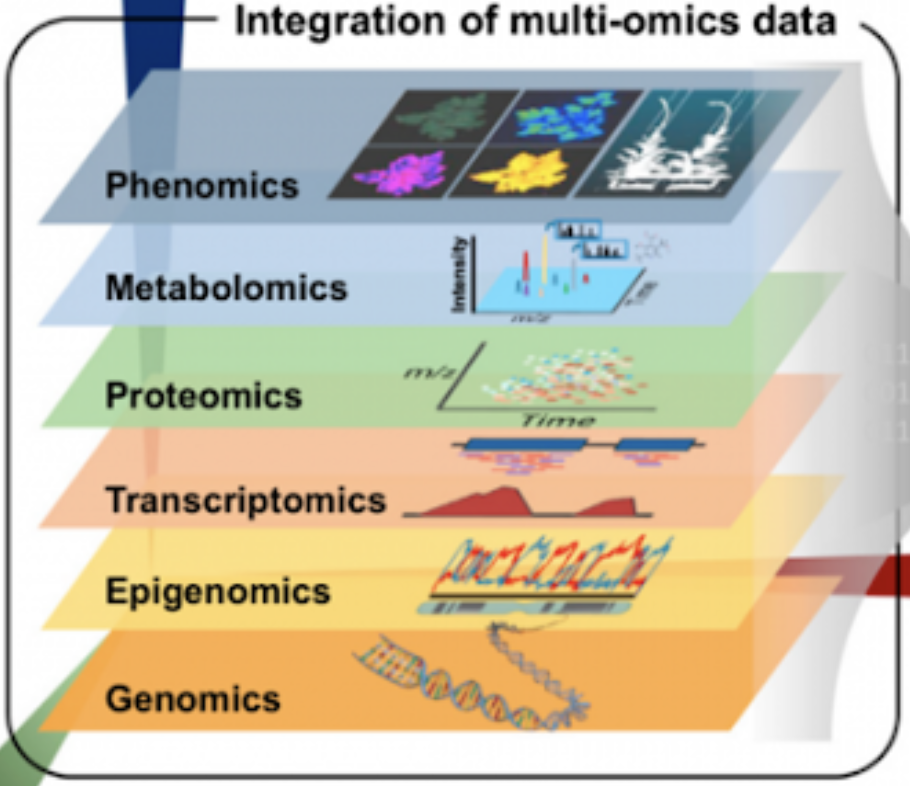
Figure Source: Argelaguet et al., 2018 · Growing Life
In this project, I practiced NIH-style grant proposal writing by developing a theoretical proposal that integrates single-cell multiomics data to investigate the molecular mechanisms using factor analysis underlying Alzheimer's Disease.
- Drafted the Specific Aims section of a conceptual NIH grant proposal and presented the multi-omics factor analysis plan to ~30 professors and students.
Subarachnoid Hemorrhage Covariate Association and Risk Modeling
Class Project · Stanford University
10/2023 – 12/2023
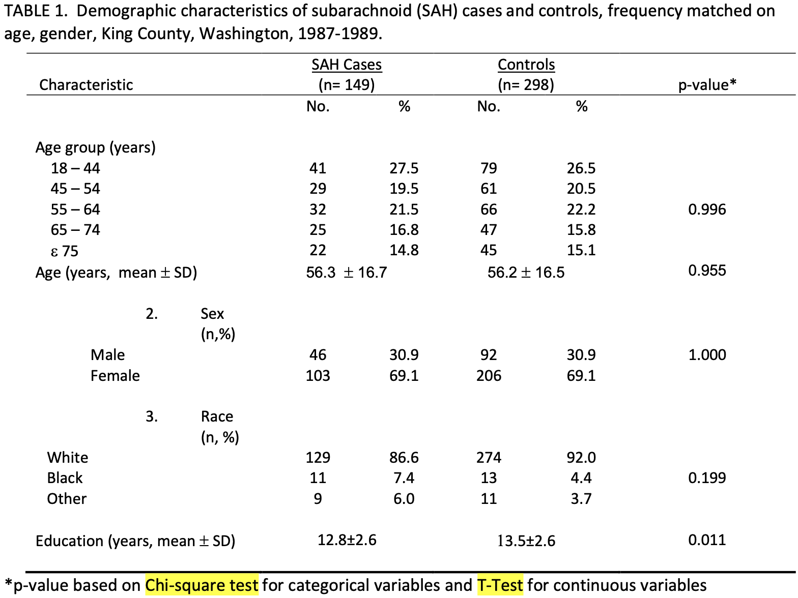
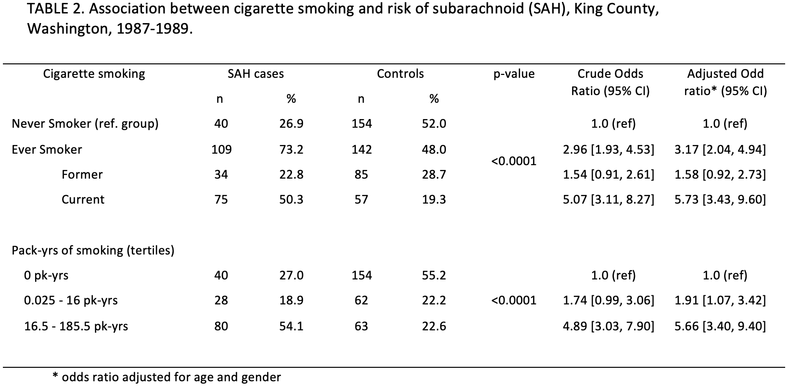
This project evaluated associations between multiple exposures (age [categorical and continuous], sex, race, and smoking) and assessed alcohol as an effect modifier of the smoking–SAH relationship.
- Cleaned and managed case-control datasets in SAS OnDemand: resolved duplicate records, standardized missing values, and created derived variables.
- Conducted descriptive analyses (chi-square tests and t-tests) and applied univariate and multivariable logistic regression to estimate crude and adjusted odds ratios for smoking.
- Performed stratified analysis using Mantel–Haenszel testing to adjust for alcohol use as a confounder.
- Generated summary tables and data visualizations for reporting.
BOOKED
Class Project · Cornell University
04/2022 – 05/2022
Nominated as Honorable Mention for Best UI for Hack Challenge Spring 2022.
This project developed an iOS app to ease the booking of a study space on campus in one of Cornell's many open libraries and study spaces.
- Programmatically developed a Cornell library study room booking system iOS app by integrating UIKit, AutoLayout, Navigation, UITable & UICollectionView, MVC, Delegation, and Animation.
- Implemented GET all libraries and available rooms, POST new reservation(s), UPDATE reservation history & DELETE reservation(s) that interact with backend API using Alamofire.
- Implemented UI with designers and collaborated with backend teammates for backend requests.
Interested in project collab? Email me!
Teaching
Beta Tester & Teaching Assistant
INFO 2950: Introduction to Data Science
Cornell University
01/2023 – 05/2023
Led discussions, graded homework and exams, held office hours, and proofread problem sets before release.
Grader
BTRY 3080: Probability Models and Inference
Cornell University
08/2022 – 08/2022
Graded homework and exams.
Teaching Assistant (Summer)
Introductory Biology & Physics I
JNC Study Abroad Platform
07/2022 – 08/2022
Led discussions, graded homework and assignments, held office hours, and bridged communication between professors and students.
Teaching Assistant
BIOMG 2801: Laboratory in Genetics and Genomics
Cornell University
01/2021 – 05/2021
CRISPR/Cas9 knockout work on fruit flies; guided 20 students in mutation analysis on the UCSC Genome Browser.
04Publications
Submitted
[1] Shin, J.‡, Brady, E.‡, Chen, C., Lauderdale, K., Agrawal, A., Zhang, Y., Jiang, X., Nambiar, P., Herbert, J., Mallen, D., Ly, K., Guo, Z., Sant, C., Thomas, R., Miller, S., Cobos, I., Palop, J.. APOE4 and Aβ synergize to drive neuronal network dysfunction and lysosomal-ER proteostasis dysregulation in the preclinical stages of Alzheimer's disease, Nature Neuroscience, 2025. Submitted
Published
[2] Poster session presenter and first author, Causal effect of type II diabetes on prostate cancer in the East Asian population: A two-sample Mendelian randomization study, AACR Special Conference: Aging and Cancer, 2022. Published
In Preparation
[3] (Aiming for BMC Medicine) Guo, Z.‡, Chen, D.‡, Stopsack, K. H., Soule, P., Ajit, D., Ramamoorthy, P., Hoffmann, T. J., Chan, J. M., Mucci L. A., Graff, R. E.. Metabolomic Disparities Between Black and Non-Hispanic White Men with Metastatic Hormone-Sensitive Prostate Cancer: A Pilot Study. (Title is tentative.)
In Preparation
[4] (Aiming for Cell) Qu, P., Wang, T., Jessa, S., Guo, Z., Guo, H., Purmann, C., Monte, E., Jiang, L., Yang, X., Zhou, B., Kundu, S., Kundaje, A., Wong, W., Hallmayer, J. F., Urban, A. E., Snyder, M. P.. Multi-modal functional genomics analysis of bipolar disorder and schizophrenia. (Title is tentative.)
In Preparation
[5] (Aiming for Nature Neuroscience) Sant, C., Guo, Z., Corces, M. R.. Preventing false discoveries in Alzheimer's disease single-cell sequencing data using permutation testing. (Title is tentative.)
In Preparation
[6] (Aiming for Nature) Ee, R., Amouzgar, M., ..., Guo, Z., ..., Bendall, S.. APOE4 Drives a Uniquely Dysfuntional Human Microglial State in Alzheimer's Disease. (Author list is tentative.)
‡ indicates co-first authorship.
05Technical Summary
Languages
 JavaScriptSwiftHTMLCSSLaTeX
JavaScriptSwiftHTMLCSSLaTeX
IDEs & Editors
 JupyterRStudioPyCharmVS CodeOverleafXcodeSAS OnDemandEclipse
JupyterRStudioPyCharmVS CodeOverleafXcodeSAS OnDemandEclipse
CLI & Cloud
UNIXTerminalSSHAWS EC2Conda ClaudeHigh Performance Computing
ClaudeHigh Performance Computing Git
Git GitHub
GitHub
ClaudeHigh Performance ComputingGitHub
Productivity
 MS WordMS Excel
MS WordMS Excel MS PowerPoint
MS PowerPoint
Creative
 Illustrator
Illustrator Photoshop
Photoshop Procreate
Procreate After Effects
After Effects
06Certifications & More
DeepLearning.AI
→ Neural Networks and Deep Learning → Improving Deep Neural Networks: Hyperparameter Tuning, Regularization and Optimization → Structuring Machine Learning Projects → Convolutional Neural Networks → Sequence ModelsIBM AI Engineering
→ Introduction to Deep Learning & Neural Networks with Keras → Neural Networks with PyTorch (In progress)Stanford
→ Writing in the Sciences (In progress)Languages
- 🇺🇸 English
- 🇨🇳 Chinese (Mandarin)
Log
04/28/2026: Redesigned the layout of the experience section.
04/11/2026: Added more animations, and filtering functionality.
03/26/2026: Added animations and redesigned homepage layout by vibe coding using Claude.
11/20/2024: Updated research experience. I will update project experience and work experience shortly.
11/12/2024: Minor updates applied to the certification section.
08/12/2024: I redesigned my website. Now I'm slowly migrating project experience and work experience over.